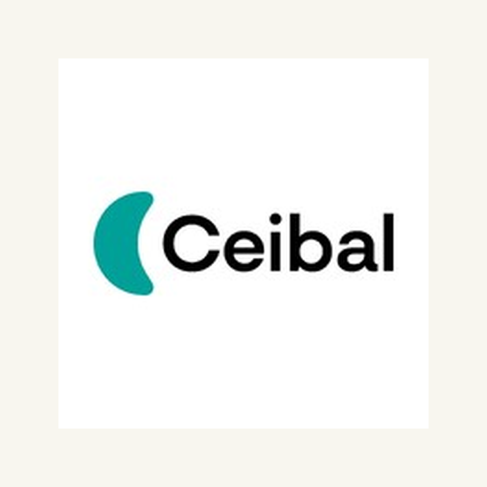

Project
Ceibal
Diversity and inclusion workshop with technology
Workshop on creating diversity and inclusion projects using technology and educational spaces.
Partners: Ceibal

Details
- Performance
- Methodological contribution and facilitation of learning in diversity, digital inclusion and design of educational solutions.
- Themes
- Educational technology, accessibility, inclusion, collaborative learning and pedagogical innovation.